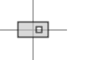
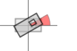
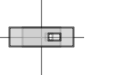
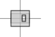

- java.lang.Object
-
- org.openmap4u.transform.AbstractTransform<T>
-
- All Implemented Interfaces:
- java.lang.Cloneable, Transformable, TransformBuildable<T>
- Direct Known Subclasses:
- DrawTransform
public class AbstractTransform<T extends AbstractTransform<T>> extends java.lang.Object implements Transformable, TransformBuildable<T>
-
-
Field Summary
-
Fields inherited from interface org.openmap4u.transform.TransformBuildable
DEFAULT_ROTATION
-
-
Constructor Summary
Constructors Constructor and Description AbstractTransform()
-
Method Summary
All Methods Instance Methods Concrete Methods Modifier and Type Method and Description java.lang.Objectclone()doublegetRotate()Gets the rotation.doublegetScaleX()Gets the x scale factor.doublegetScaleY()Gets the y scale factor.Trotate(double rotation)Sets the rotation in the configured angular units.Tscale(double scaleFactor)Scales the primitive with the given scale factor in x and y direction.TscaleX(double scaleX)Scales the primitive with the given scale factor in x direction.TscaleY(double scaleY)Scales the primitive with the given scale factor in y direction.
-
-
-
Method Detail
-
rotate
public T rotate(double rotation)
Description copied from interface:TransformBuildableSets the rotation in the configured angular units.- Specified by:
rotatein interfaceTransformBuildable<T extends AbstractTransform<T>>- Parameters:
rotation- The rotation in angle units.
Example:
original primitive myBuilder.rotate(30) = - Returns:
- The builder itself (fluent interface pattern).
-
scale
public T scale(double scaleFactor)
Description copied from interface:TransformBuildableScales the primitive with the given scale factor in x and y direction.- Specified by:
scalein interfaceTransformBuildable<T extends AbstractTransform<T>>- Parameters:
scaleFactor- The scale factor.
Example:
original primitivemyBuilder.scale(1.7) =
- Returns:
- The builder itself (fluent interface pattern).
-
scaleX
public T scaleX(double scaleX)
Description copied from interface:TransformBuildableScales the primitive with the given scale factor in x direction.- Specified by:
scaleXin interfaceTransformBuildable<T extends AbstractTransform<T>>- Parameters:
scaleX- The scale factor in x direction.
Example:
original primitivemyBuilder.scaleX(1.7) = - Returns:
- The builder itself (method chaining pattern).
-
scaleY
public T scaleY(double scaleY)
Description copied from interface:TransformBuildableScales the primitive with the given scale factor in y direction.- Specified by:
scaleYin interfaceTransformBuildable<T extends AbstractTransform<T>>- Parameters:
scaleY- The scale factor in y direction
Example:
original primitivemyBuilder.scaleX(1.7) = - Returns:
- The builder itself (fluent interface pattern).
-
getRotate
public double getRotate()
Description copied from interface:TransformableGets the rotation.- Specified by:
getRotatein interfaceTransformable- Returns:
- The rotation.
-
getScaleX
public double getScaleX()
Description copied from interface:TransformableGets the x scale factor.- Specified by:
getScaleXin interfaceTransformable- Returns:
- The x scale factor.
-
getScaleY
public double getScaleY()
Description copied from interface:TransformableGets the y scale factor.- Specified by:
getScaleYin interfaceTransformable- Returns:
- The y scale factor.
-
clone
public java.lang.Object clone() throws java.lang.CloneNotSupportedException- Overrides:
clonein classjava.lang.Object- Throws:
java.lang.CloneNotSupportedException
-
-